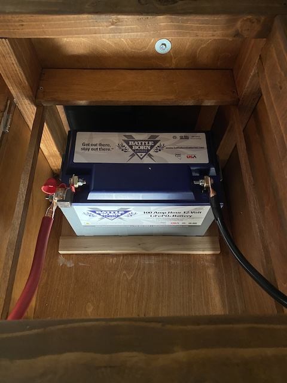
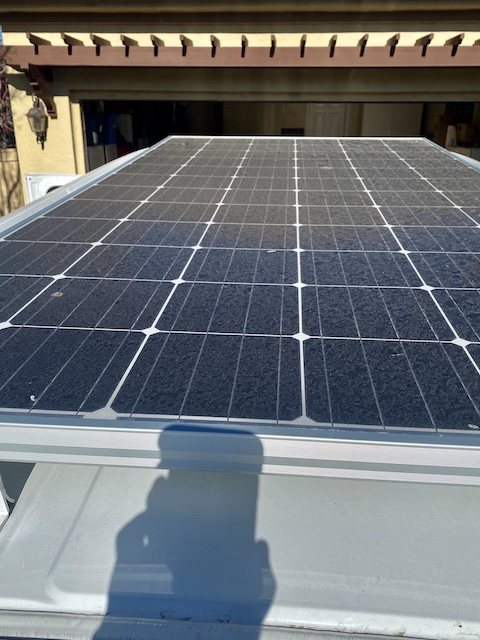
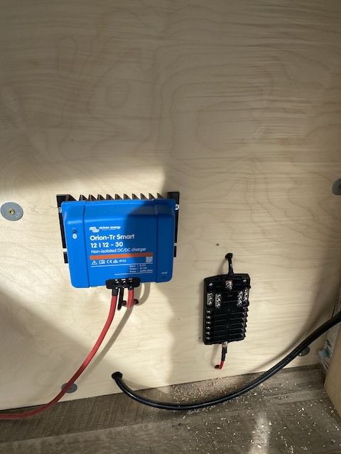
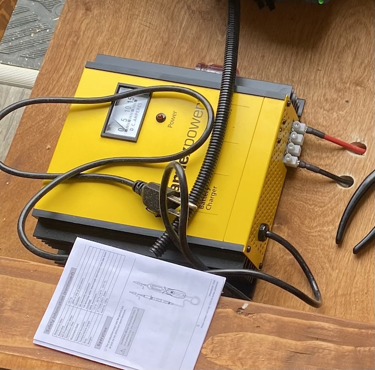
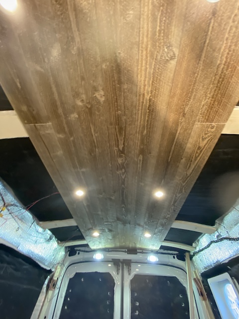
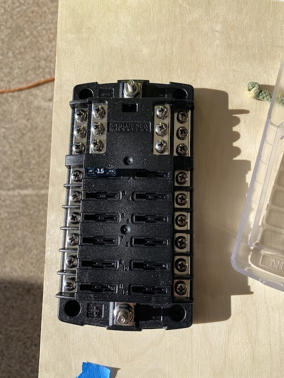
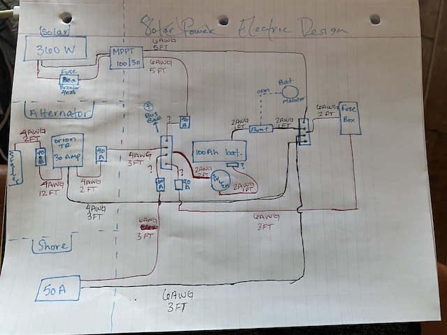

Electrical System
The electrical setup in my van was the most challenging and most rewarding part of the build. As I had no prior experience, the learning curve was quite high. I have a 100Ah lithium battery that runs everything, including the lights, water pump, phone chargers, propane shutoff switch, and fridge. The system is designed with three different charging methods to keep power available wherever I go, and enables me to stay off grid for months if I so choose.
Charging Methods
- Solar Power:360W of solar panels mounted on the roof charge the 100Ah lithium battery during the day.
- DC to DC Charger:When the van engine is running, the alternator sends power through a DC-to-DC charger to top off the battery.
- Shore Power:When parked near outlets, I can plug directly into standard AC power to recharge the system.
Installation Steps
- Mounted solar panels securely on the roof of the van, and then drilled a hole in the roof for the wires to be secured to the lithium battery.
- Installed the DC-DC charger between the vehicle starter battery and the lithium battery.
- Wired in a shore power inlet to allow charging from a household outlet.
- Connected a fuse box distributing power to dimmable LED lights, outlets, water pump, fridge, fans, and heater.
- Added labeled breakers and safety disconnect switches for each major circuit, as well as one large "ON/OFF" switch that could disconnect the entire system at the flick of a switch.
Electrical Components
| Component | Specification | Purpose |
|---|---|---|
| Battery | 100Ah Lithium-Ion | Main power storage |
| Solar Panels | 360W | Primary off-grid charging source |
| DC to DC Charger | Renogy 40A | Chargers from alternator while driving |
| Lighting System | Dual dimmable LED zones | Overhead lighting with warm tone control |
| Accessory Ports | 12V sockets and USB outlets | Phone, fan, and appliance charging |
| Propane Shutoff Switch | 12V electronic valve | Safety switch that cuts propane flow |
Battery Bank
A 100Ah lithium-ion battery serves as the heart of the system, storing power from all three charging sources. It’s secured under the bed frame in a vented compartment for safety.
Solar Panels
360W are mounted on the roof rack. They provide renewable charging power whenever sunlight is available.
DC-to-DC Charger
This charger connects the van’s alternator to the house battery. When the engine is running, it automatically charges the lithium battery at 40A, letting me top off power while driving.
Shore Power
I can plug the van directly into a household outlet for backup charging. A small onboard charger converts 120V AC to 12V DC for the battery system.
Lighting and Accessories
The van has two dimmable LED zones, 12V cigarette-lighter sockets, USB ports for phone charging, and a 12V safety switch that cuts propane flow. Everything is wired through a labeled fuse box.
 System Overview
This simple diagram shows how the entire setup connects:
